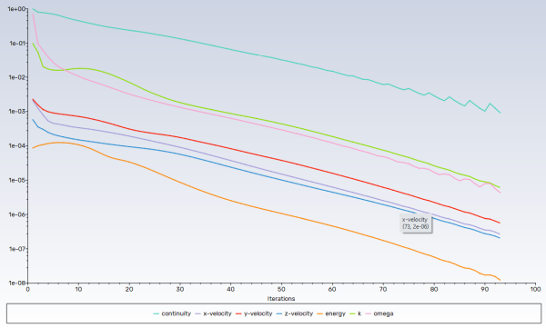
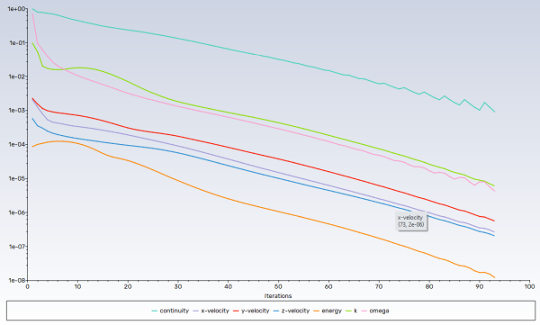

Note
Click here to download the full example code
Watertight geometry meshing workflow#
This example sets up and solves a three-dimensional turbulent fluid flow and heat transfer problem in a mixing elbow, which is common in piping systems in power plants and process industries. Predicting the flow field and temperature field in the area of the mixing region is important to designing the junction properly.
This example uses the guided workflow for watertight geometry meshing because it is appropriate for geometries that can have no imperfections, such as gaps and leakages.
Workflow tasks
The watertight geometry meshing workflow guides you through these tasks:
Import a CAD geometry
Generate a surface mesh
Describe the geometry
Generate a volume mesh
Problem description
A cold fluid at 20 deg C flows into the pipe through a large inlet. It then mixes
with a warmer fluid at 40 deg C that enters through a smaller inlet located at
the elbow. The pipe dimensions are in inches, and the fluid properties and
boundary conditions are given in SI units. Because the Reynolds number for the
flow at the larger inlet is 50, 800, a turbulent flow model is required.
# sphinx_gallery_thumbnail_path = '_static/mixing_elbow.png'
Example Setup#
Before you can use the watertight geometry meshing workflow, you must set up the example and initialize this workflow.
Perform required imports#
Perform required imports, which includes downloading and importing the geometry file.
import ansys.fluent.core as pyfluent
from ansys.fluent.core import examples
import_filename = examples.download_file("mixing_elbow.pmdb", "pyfluent/mixing_elbow")
Launch Fluent#
Launch Fluent as a service in meshing mode with double precision running on two processors.
meshing = pyfluent.launch_fluent(precision="double", processor_count=2, mode="meshing")
Initialize workflow#
Initialize the watertight geometry meshing workflow.
meshing.workflow.InitializeWorkflow(WorkflowType="Watertight Geometry")
True
Watertight geometry meshing workflow#
The fault-tolerant meshing workflow guides you through the several tasks that follow.
Import CAD and set length units#
Import the CAD geometry and set the length units to inches.
meshing.workflow.TaskObject["Import Geometry"].Arguments = {
"FileName": import_filename,
"LengthUnit": "in",
}
# Import geometry
# ~~~~~~~~~~~~~~~
# Import the geometry.
meshing.workflow.TaskObject["Import Geometry"].Execute()
True
Add local sizing#
Add local sizing. This task asks whether you want to add local sizing controls to the faceted geometry. You can keep the default settings and execute the task.
meshing.workflow.TaskObject["Add Local Sizing"].AddChildToTask()
meshing.workflow.TaskObject["Add Local Sizing"].Execute()
True
Generate surface mesh#
Generate the surface mash. In this task, you can set various properties of the
surface mesh for the faceted geometry. For "MaxSize", set 0.3.
meshing.workflow.TaskObject["Generate the Surface Mesh"].Arguments = {
"CFDSurfaceMeshControls": {"MaxSize": 0.3}
}
meshing.workflow.TaskObject["Generate the Surface Mesh"].Execute()
True
Describe geometry#
Describe the geometry. In this task, you are prompted with questions relating to the nature of the imported geometry, which defines the fluid region. The geometry consists of only fluid regions.
meshing.workflow.TaskObject["Describe Geometry"].UpdateChildTasks(
SetupTypeChanged=False
)
meshing.workflow.TaskObject["Describe Geometry"].Arguments = {
"SetupType": "The geometry consists of only fluid regions with no voids"
}
meshing.workflow.TaskObject["Describe Geometry"].UpdateChildTasks(SetupTypeChanged=True)
meshing.workflow.TaskObject["Describe Geometry"].Execute()
True
Update boundaries#
Update the boundaries. Set "BoundaryLabelTypeList" to "wall" and
update the boundaries.
meshing.workflow.TaskObject["Update Boundaries"].Arguments = {
"BoundaryLabelList": ["wall-inlet"],
"BoundaryLabelTypeList": ["wall"],
"OldBoundaryLabelList": ["wall-inlet"],
"OldBoundaryLabelTypeList": ["velocity-inlet"],
}
meshing.workflow.TaskObject["Update Boundaries"].Execute()
True
Update regions#
Update the regions. In this task, you can review the names and types of the various regions that have been generated from your imported geometry and change them as needed. You can keep the default settings.
meshing.workflow.TaskObject["Update Regions"].Execute()
True
Add boundary layers#
Add boundary layers, which consist of setting properties for the boundary layer mesh. You can keep the default settings.
meshing.workflow.TaskObject["Add Boundary Layers"].AddChildToTask()
meshing.workflow.TaskObject["Add Boundary Layers"].InsertCompoundChildTask()
meshing.workflow.TaskObject["smooth-transition_1"].Arguments = {
"BLControlName": "smooth-transition_1",
}
meshing.workflow.TaskObject["Add Boundary Layers"].Arguments = {}
meshing.workflow.TaskObject["smooth-transition_1"].Execute()
True
Generate volume mesh#
Generate the volume mesh, which consists of setting properties for the
volume mesh. Set "VolumeFill" to "poly-hexcore".
meshing.workflow.TaskObject["Generate the Volume Mesh"].Arguments = {
"VolumeFill": "poly-hexcore",
"VolumeFillControls": {
"HexMaxCellLength": 0.3,
},
}
meshing.workflow.TaskObject["Generate the Volume Mesh"].Execute()
True

Check mesh in meshing mode#
Check the mesh in meshing mode
meshing.tui.mesh.check_mesh()
Save mesh file#
Save the mesh file (mixing_elbow.msh.h5).
meshing.tui.file.write_mesh("mixing_elbow.msh.h5")
Solve and postprocess#
Once you have completed the watertight geometry meshing workflow, you can solve and postprcess the results.
Switch to solution mode#
Switch to solution mode. Now that a high-quality mesh has been generated
using Fluent in meshing mode, you can switch to solver mode to complete the
setup of the simulation. Because you have just checked the mesh, set "yes"
to switch to the solution mode.
solver = meshing.switch_to_solver()
Check mesh in solver mode#
Check the mesh in solver mode. The mesh check lists the minimum and maximum x, y, and z values from the mesh in the default SI units of meters. It also reports a number of other mesh features that are checked. Any errors in the mesh are reported. Ensure that the minimum volume is not negative because Fluent cannot begin a calculation when this is the case.
solver.tui.mesh.check()
Set working units for mesh#
Set the working units for the mesh to inches. Because the default SI units are used for everything except length, you do not have to change any other units in this example. If you want working units for length to be other than inches (for example, millimeters), make the appropriate change.
solver.tui.define.units("length", "in")
Enable heat transfer#
Enable heat transfer by activating the energy equation.
solver.tui.define.models.energy("yes", ", ", ", ", ", ", ", ")
Create material#
Create a material named "water-liquid".
solver.tui.define.materials.copy("fluid", "water-liquid")
Set up cell zone conditions#
Set up the cell zone conditions for the fluid zone (elbow-fluid)``. Set the
material to "water-liquid".
solver.tui.define.boundary_conditions.fluid(
"elbow-fluid",
"yes",
"water-liquid",
"no",
"no",
"no",
"no",
"0",
"no",
"0",
"no",
"0",
"no",
"0",
"no",
"0",
"no",
"1",
"no",
"no",
"no",
"no",
"no",
)
Set up boundary conditions for CFD analysis#
Set up the boundary conditions for the inlets, outlet, and walls for CFD analysis.
# cold inlet (cold-inlet), Setting: Value:
# Velocity Specification Method: Magnitude, Normal to Boundary
solver.tui.define.boundary_conditions.set.velocity_inlet(
"cold-inlet", [], "vmag", "no", 0.4, "quit"
)
solver.tui.define.boundary_conditions.set.velocity_inlet(
"cold-inlet", [], "ke-spec", "no", "no", "no", "yes", "quit"
)
solver.tui.define.boundary_conditions.set.velocity_inlet(
"cold-inlet", [], "turb-intensity", 5, "quit"
)
solver.tui.define.boundary_conditions.set.velocity_inlet(
"cold-inlet", [], "turb-hydraulic-diam", 4, "quit"
)
solver.tui.define.boundary_conditions.set.velocity_inlet(
"cold-inlet", [], "temperature", "no", 293.15, "quit"
)
# hot inlet (hot-inlet), Setting: Value:
# Velocity Specification Method: Magnitude, Normal to Boundary
solver.tui.define.boundary_conditions.set.velocity_inlet(
"hot-inlet", [], "vmag", "no", 1.2, "quit"
)
solver.tui.define.boundary_conditions.set.velocity_inlet(
"hot-inlet", [], "ke-spec", "no", "no", "no", "yes", "quit"
)
solver.tui.define.boundary_conditions.set.velocity_inlet(
"hot-inlet", [], "turb-intensity", 5, "quit"
)
solver.tui.define.boundary_conditions.set.velocity_inlet(
"hot-inlet", [], "turb-hydraulic-diam", 1, "quit"
)
solver.tui.define.boundary_conditions.set.velocity_inlet(
"hot-inlet", [], "temperature", "no", 313.15, "quit"
)
# pressure outlet (outlet), Setting: Value:
# Backflow Turbulent Intensity: 5 [%]
# Backflow Turbulent Viscosity Ratio: 4
solver.tui.define.boundary_conditions.set.pressure_outlet(
"outlet", [], "turb-intensity", 5, "quit"
)
solver.tui.define.boundary_conditions.set.pressure_outlet(
"outlet", [], "turb-viscosity-ratio", 4, "quit"
)
Enable plotting of residuals during calculation#
Enable plotting of residuals during the calculation.
solver.tui.solve.monitors.residual.plot("yes")
Create surface report definition#
Create a surface report definition of the average temperature at the outlet
named "outlet-temp-avg".
solver.tui.solve.report_definitions.add(
"outlet-temp-avg",
"surface-massavg",
"field",
"temperature",
"surface-names",
"outlet",
"()",
"quit",
)
Create expression report definition#
Create a report definition of single value expression type computing the difference
of area-averaged static pressure over cold-inlet and oulet. The name of the
report definition is "ave-pressure-diff".
solver.tui.solve.report_definitions.add(
"ave-pressure-diff",
"single-val-expression",
"define",
"\"AreaAve(StaticPressure, ['cold-inlet'])-AreaAve(StaticPressure, ['outlet'])\"",
"quit",
)
Create convergence condition#
Create a convergence condition for outlet-temp-avg.
# - Set ``"add"`` to ``"con-outlet-temp-avg"``.
# - Set ``"report-defs"`` to ``"outlet-temp-avg"``.
# - Set ``"stop-criterion"`` to ``"1e-04"``.
# - Set ``"initial-values-to-ignore"`` to ``"20"``.
# - Set ``"previous-values-to-consider"`` to ``"15"``.
# - Set ``"print?"``to ``"yes"``.
# - Set ``"frequency"`` to ``"3"``.
#
# These settings cause Fluent to consider the solution converged when the
# surface report definition value for each of the previous 15 iterations is
# within 0.001% of the current value. Convergence of the values is checked
# every 3 iterations. The first 20 iterations are ignored, allowing for any
# initial solution dynamics to settle out. Note that the value printed to the
# console is the deviation between the current and previous iteration values
# only.
solver.tui.solve.convergence_conditions(
"conv-reports",
"add",
"con-outlet-temp-avg",
"initial-values-to-ignore",
"20",
"previous-values-to-consider",
"15",
"print?",
"yes",
"report-defs",
"outlet-temp-avg",
"stop-criterion",
"1e-04",
"quit",
"quit",
"condition",
"1",
"frequency",
"3",
"quit",
)
solver.tui.solve.convergence_conditions("frequency", "3", "quit")
Initialize flow field#
Initialize the flow field using hybrid initialization.
solver.tui.solve.initialize.hyb_initialization()
Save case file#
Solve the case file (mixing_elbow1.cas.h5).
solver.tui.file.write_case("mixing_elbow1.cas.h5")
Solve for 100 iterations#
Solve for 100 iterations.
solver.tui.solve.iterate(100)
 

{kind=link}
Save data file#
Save the data file (mixing_elbow1.dat.h5).
solver.tui.file.write_data("mixing_elbow1.dat.h5")
Create definition for velocity magnitude contours#
Create and display a definition for the velocity magnitude contours on the symmetry plane.
Set
"contour"to"contour-vel".Set
"field"to"velocity-magnitude".Set
"surfaces-list"to"symmetry-xyplane".Set
"display"to"contour-vel contour".
solver.tui.display.objects.create(
"contour",
"contour-vel",
"filled?",
"yes",
"node-values?",
"yes",
"field",
"velocity-magnitude",
"surfaces-list",
"symmetry-xyplane",
"()",
"coloring",
"banded",
"quit",
)
{kind=link}
Create definition for temperature contours#
Create and display a definition for temperature contours on the symmetry plane.
Set
"contour"to"contour-temp".Set
"field"to"temperature".Set
"surfaces-list"to"symmetry-xyplane".Set
"display"to"contour-temp contour".
solver.tui.display.objects.create(
"contour",
"contour-temp",
"filled?",
"yes",
"node-values?",
"yes",
"field",
"temperature",
"surfaces-list",
"symmetry-xyplane",
"()",
"coloring",
"smooth",
"quit",
)

Create velocity vectors#
Create and display velocity vectors on the symmetry-xyplane plane.
Set
"vector"to"vector-vel".Set
"style"to"arrow".Set
"surface-list"to"symmetry-xyplane".Set
"scale"to"4".Set
"skip"to"2".
solver.tui.display.objects.create(
"vector",
"vector-vel",
"style",
"arrow",
"surface-list",
"symmetry-xyplane",
"()",
"scale",
"scale-f",
"4",
"quit",
"skip",
"2",
"quit",
)

Create iso-surface#
Create an iso-surface representing the intersection of the plane z=0 and the
surface outlet. Name it "z=0_outlet".
solver.tui.surface.iso_surface(
"z-coordinate", "z=0_outlet", "outlet", "()", "()", "0", "()"
)
Display and save XY plot#
Display and save an XY plot of the temperature profile across the centerline of the outlet for the initial solution.
solver.tui.display.objects.create(
"xy",
"xy-outlet-temp",
"y-axis-function",
"temperature",
"surfaces-list",
"z=0_outlet",
"()",
"quit",
)
{kind=link}
Write final case file and data#
Write the final case file and the data.
solver.tui.file.write_case_data("mixing_elbow2_tui.cas.h5")
Close Fluent#
Close Fluent.
solver.exit()
Total running time of the script: ( 1 minutes 13.677 seconds)